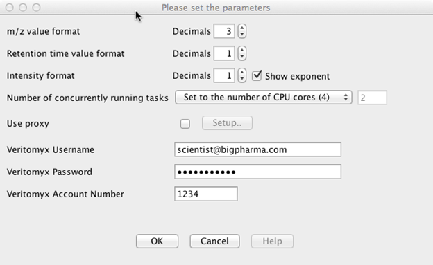
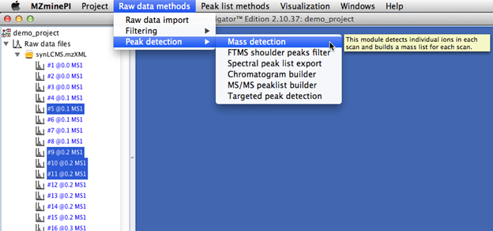
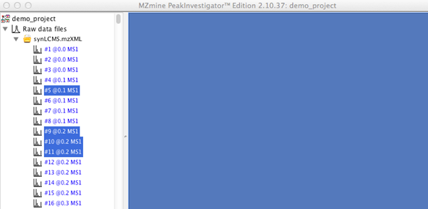
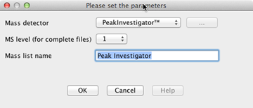
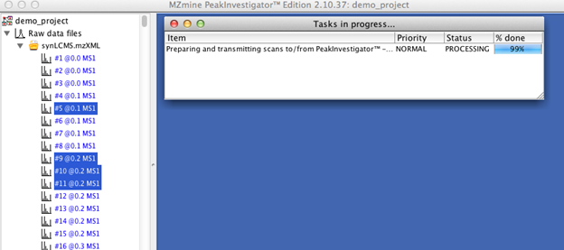
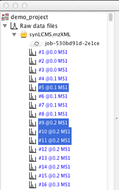
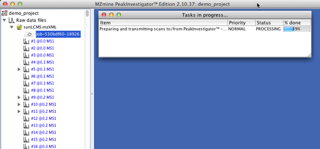
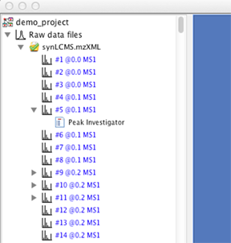
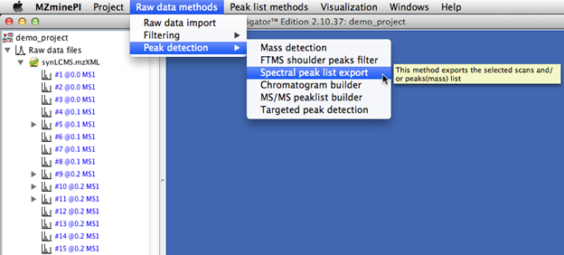
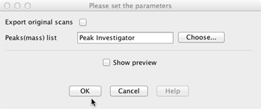

This Addendum explains how to access and utilize the PeakInvestigator™1 features added to MZmine 2.172 in the MZmine PeakInvestigator Edition (“MZminePI”). PeakInvestigator is a software as a service (SaaS) offering of Veritomyx, Inc.3 for the detection and deconvolution of nearly isobaric peaks while delivering precise centroiding of raw mass spectra.
1 PeakInvestigator™ is a trademark of Veritomyx, Inc. www.veritomyx.com.The PeakInvestigator application programming interface has been built into MZminePI. PeakInvestigator packages user-selected spectra and securely submits them as a Job under the User's identity to the Veritomyx servers, where the spectra are processed. A centroided peak list is returned to the User via the same secure conduit. All submitted files are stripped of header information and are encrypted during transfer for HIPAA4 compliance. The resulting PeakInvestigator mass lists may be displayed in MZmine and processed like any other MZmine mass list. All files are deleted from the Veritomyx servers after the data is successfully retrieved. PeakInvestigator utilizes advanced signal processing technology running on a high performance computing cluster. PeakInvestigator jobs can take many hours to complete; therefore, there is an option to save the MZmine project with all the information necessary to retrieve the files when done. Job status can be viewed at secure.veritomyx.com. Completed jobs may be viewed with any version of MZmine. Prior to job completion, the interim MZmine project version that contains the job retrieval information can only be opened with MZminePI.
4 The Health Insurance Portability and Accountability Act of 1996.
The minimum number of mass decimal places required in the raw data transmitted to PeakInvestigator for analysis can be determined from the minimum detector bin spacing at the lowest mass peak in your data set:
Higher numbers of significant digits will increase the file size for data transfers to the Veritomyx servers. However, extra significant digits will only help to optimize the precision of the PeakInvestigator results.Mass decimal places >= Integer { -Log10 [(m/z)2 - (m/z)1] + 0.5}
where: (m/z)2 and (m/z)1are adjacent m/z values within the lowest mass peak in your data set.Critical Step: When you export spectral data from your mass spec in an MZmine-compatible data format, be sure to confirm that the data format provides at least the number of mass decimal places specified by the equation above. This will preserve your ability to maximize the precision available from subsequent signal processing.
The first time that you set up MZminePI, you will need to enter your Veritomyx user account information. Subsequent use of PeakInvestigator features will then automatically be managed and billed to the Veritomyx user account that you provided. If you need to change the desired Veritomyx user account, this information can be edited at any time.

Finding the PeakInvestigator Menu Option
The option for PeakInvestigator processing can be found under the Raw Data Methods >> Peak Detection >> Mass Detection menu.
Under the "Please set the parameters" dialog box that pops up, you can select the PeakInvestigator option from the “Mass detector” pull down menu. The other listed options are the MZmine standard options for centroiding.
Selecting Scans for Processing
In the left window pane, select the scans that you wish to have centroided. Alternatively, select the parent project if all of the scans are to be centroided. Each scan selected and submitted will consume some SaaS resources from the user’s Veritomyx account. Any number of scans or a single scan may be selected and submitted for processing. You may also select non-contiguous scans (as shown).

Running PeakInvestigator on Selected Scans
In MZminePI’s top menu bar, go to Raw data methods >> Peak detection >> Mass detection. In the dialog box that appears, complete all of the information requested:

Mass detector: Select “PeakInvestigator” from the drop-down menu.
MS level: Follow the standard instructions for MZmine 2.10 or latest MZmine version: If the entire project is to be processed at once, set the MS level for the type of scan to be processed (e.g., MS1, MS2, etc.). Otherwise, this setting is ignored.
Mass list name: The name specified here will be assigned to the mass lists returned from the Veritomyx servers. If you specify a “Mass list name” that is already present in the open Project at the time the results are retrieved from the Veritomyx servers, the old mass lists will be overwritten by the new ones.
Click the OK button to launch the PeakInvestigator job.
A task window will appear to advise you on the status of the PeakInvestigator job being prepared and transmitted to Veritomyx for processing. A progress bar on the right side provides the current status.

DO NOT CLOSE MZminePI BEFORE TRANSMISSION TO THE VERITOMYX SERVERS IS COMPLETE!
Once the Job has been successfully transmitted to the Veritomyx servers and launched, it will appear under the parent project in the left panel of MZminePI, to the right of a cloud icon (indicating that the job is in progress). The job number is provided so that the user can check the submitted job status by logging into their account at secure.veritomyx.com.

Save Your Project
CRITICAL STEP: SAVE YOUR PROJECT TO DISK
Once the cloud icon appears, indicating that the transmission of your job to the Veritomyx servers is complete, it is critically important to save the job tracking information, by saving your project. This saves the information MZminePI needs to retrieve the PeakInvestigator mass lists later. Follow the standard MZmine instructions for saving your project. Once the project is saved, you can exit MZminePI safely.
The algorithms that power PeakInvestigator are computationally intensive, and processing jobs will take some time. It is therefore strongly recommended that users save their project to disk, and return at a later time to retrieve their results.
Because of the additional PeakInvestigator-specific project information contained in this interim MZmine project, this project.mzmine file can only be opened by MZminePI.
Additional Jobs
You may select additional scans or re-run the entire project at any time. These new jobs will appear as additional cloud icons in the MZminePI project menu.
Retrieving Job Results in MZminePI
Double-clicking on the cloud icon will initiate the download of a completed job.
If the job is complete, a task window will appear with a status bar indicating that MZminePI is retrieving the data from the Veritomyx servers. If the download is interrupted before completion, retrieval can be re-initiated.
If the job is not finished, a message will be displayed asking you to check back later. Alternatively, you can log in to your account at the Veritomyx user portal (secure.veritomyx.com) to check the status of all submitted jobs.

When the data retrieval from the Veritomyx servers is complete, the new PeakInvestigator mass lists will appear in the project list located in the left pane of the MZminePI window, titled with the “Mass list name” that you provided when setting up the job.

Save Your Retrieved Mass Lists
Follow the standard MZmine instructions for saving your project.
As soon as your job has been successfully retrieved from the Veritomyx server, the job is removed from the drop-down menu, and your mass lists and raw data will be deleted from the Veritomyx servers.
This is a feature that Veritomyx has added to MZminePI, which is not in MZmine-2.17, for users that would like to process their mass lists in other bioinformatic pipelines. MZminePI allows the user to export their mass lists as tab-delimited ASCII files.
Mass List Export can be found under Raw Data Methods >> Peak Detection >> Spectral peak list export.

Choose (or type in) the mass list(s) to export. Place a check mark in the box “Export original scans” if you want to include the original scans (raw data) with the exported mass list(s).

Click OK to start the export. The mass list(s) are exported into the folder where your copy of MZminePI is located.